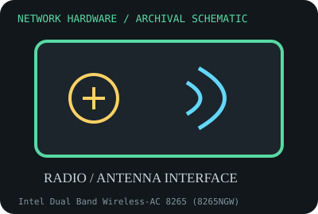

[ MODEL-SPECIFIC NETWORK HARDWARE RECORD ]
Intel Dual Band Wireless-AC 8265 (8265NGW)
Dual-band 2x2 802.11ac M.2 radio with separate Bluetooth function. This record identifies the stated model/revision; visually similar products may use different silicon or firmware.

IDENTIFICATION: Verify the full label, board revision, vendor/device IDs and regulatory markings before selecting firmware or drivers. Nominal PHY/link rates below are not measured application throughput.
Specifications and compatibility
| Subcategory | Wireless adapters |
|---|---|
| Exact model | Intel Dual Band Wireless-AC 8265 (8265NGW) |
| Interface and connector | M.2 2230 Key E; Wi-Fi uses PCIe and Bluetooth uses USB signals; two miniature antenna coax sockets. |
| Controller / PHY / radio | Dual-band 2x2 802.11ac radio, 2.4/5 GHz; Bluetooth 4.2. Host antenna layout and regulatory domain affect operation. |
| Nominal throughput (not a test) | Maximum advertised 867 Mb/s Wi-Fi link rate with 2x2 80 MHz 5 GHz 802.11ac under supported conditions; Bluetooth rate is separate. Not application throughput. |
| Measured throughput | No over-the-air throughput measurement is provided. Real goodput varies with AP, channel width, signal, interference, aggregation, driver and concurrent clients. |
| Driver / OS / firmware | Intel Windows 10 driver packages are available for supported configurations; Linux uses iwlwifi with matching firmware. Newer OS releases and OEM power/regulatory settings should be checked against support notes. |
| Compatibility | Requires an M.2 Key E/compatible 2230 slot wired for PCIe and USB, two antenna leads and host BIOS approval. Wireless regulatory settings depend on the country and host implementation. |
| Variant warning | 8265NGW is not Intel 8265D2W or a CNVio module. M.2 connector fit alone does not ensure compatible electrical wiring or BIOS whitelist approval; Bluetooth may fail if USB is unwired. |
Variant and operating notes
8265NGW is not Intel 8265D2W or a CNVio module. M.2 connector fit alone does not ensure compatible electrical wiring or BIOS whitelist approval; Bluetooth may fail if USB is unwired.
Intel Windows 10 driver packages are available for supported configurations; Linux uses iwlwifi with matching firmware. Newer OS releases and OEM power/regulatory settings should be checked against support notes.
Throughput policy: vendor/standard rates are labeled nominal. This archive includes no measured benchmark for this specimen; do not interpret a link rate or aggregate port capacity as sustained payload performance.
Archival, ESD and preservation notes
Record label, FCC/region markings, host system, antenna lead labels and driver/firmware. Disconnect power before handling; cap antenna connectors, avoid bending the tiny coax sockets and use ESD-safe packaging.
Preserve the exact model/revision, serial/date code, firmware and driver versions, accessories, condition, source provenance, and source-document revision. Never retain access credentials or undocumented secrets in the public catalog.
Manufacturer and standards sources
- Intel Wireless-AC 8265 product specificationsManufacturer or standards reference; match the complete model/revision before applying specifications.
- Intel 8265 support and downloadsManufacturer or standards reference; match the complete model/revision before applying specifications.
- Wi-Fi Alliance technology overviewManufacturer or standards reference; match the complete model/revision before applying specifications.
Source coverage can be family-level; manufacturer documentation for the exact part number and hardware revision takes precedence. Standards describe protocol behavior, not a promise of real-world performance.